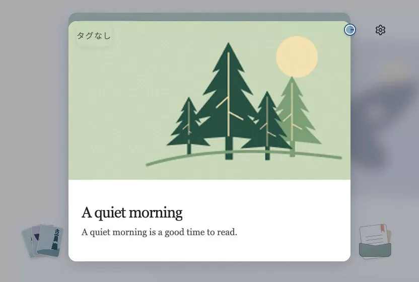
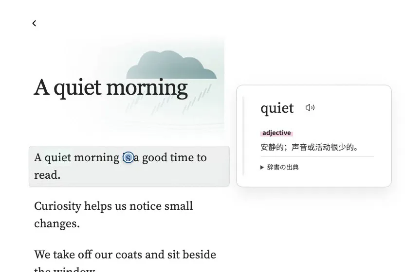
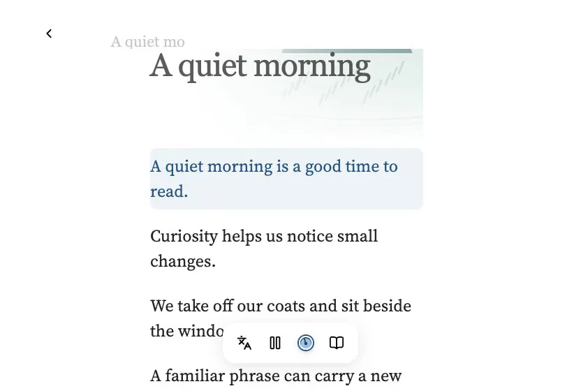
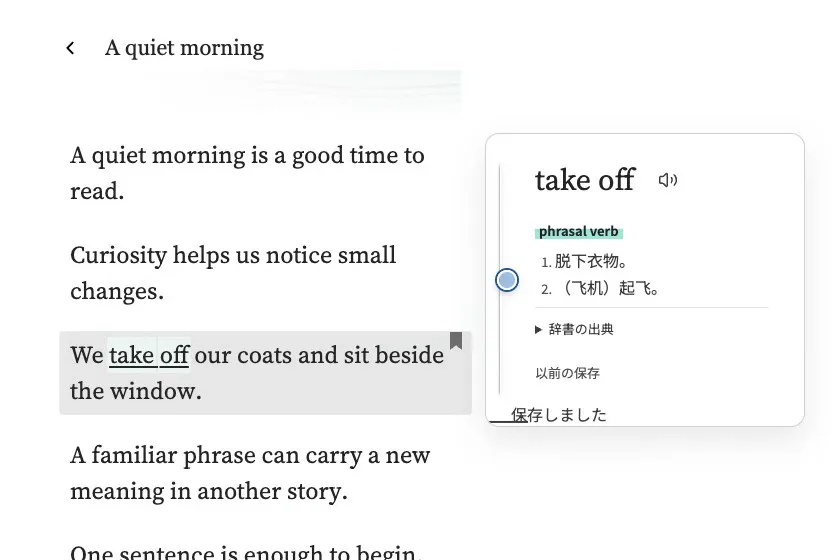
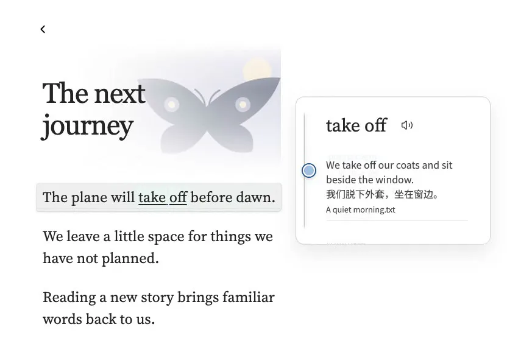

読みたい一篇から始めよう。

quiet を選んで、その場で辞書を引く。

一文を声で聴いてみよう。

表現を、その一文と一緒に。

同じ表現が、別の物語に。

実際に読んでみよう。
サンプルを開き、英単語を一つ選んで文中の意味を確かめてみましょう。
公開ダウンロードは macOS・Windows・Android 向けの v0.4.5 です。オンラインでは新しい読書画面を体験できます。公開 iPhone インストーラーはありません。